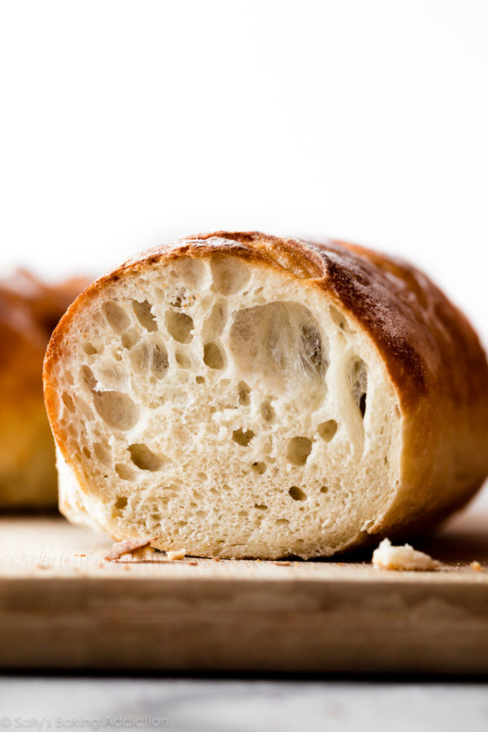

Description
Even if you’ve never made homemade bread or worked with yeast before, this homemade crusty artisan bread is for you.
Ingredients
- 3 and 1/4 cups Bread Flour
- 2 teaspoons Instant Yeast
- 2 teaspoons Coarse Salt
- 1 and 1/2 cups Cool water
Steps
- Whisk flour, yeast and salt together. Pour in cool water and gently mix together
- Cover the dough tightly with plastic wrap and set on counter
- Dust baking sheet and lay out
- Bake in oven